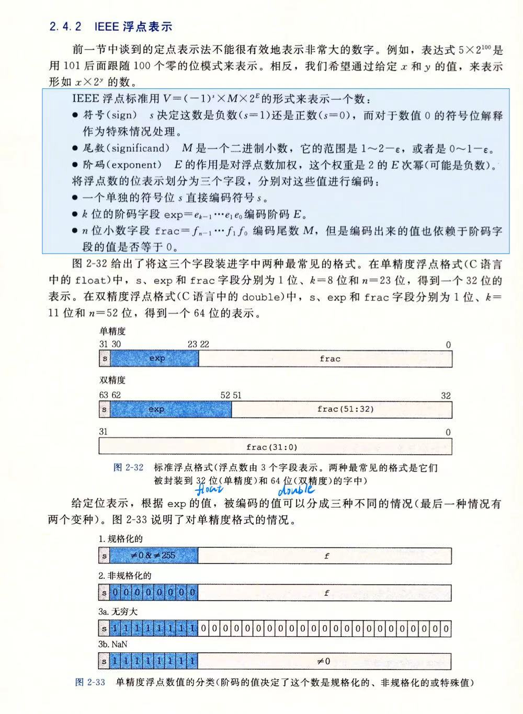
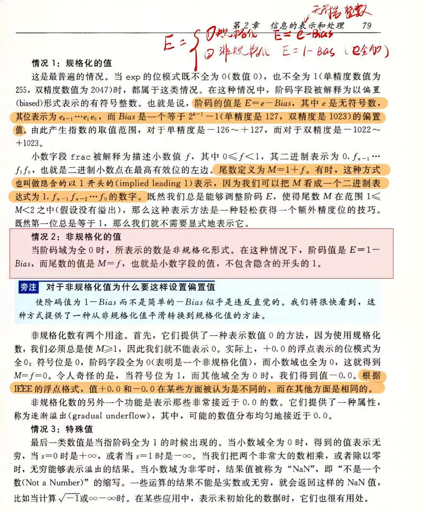

rust库中默认内置的变量
一、标量类型（Scalar Types）
1. 整数类型（Integer）
Rust 的整数类型根据符号和位宽分类，命名格式为 [u|i][位数]：
| 类型 | 位数 | 范围 | 示例值 | 典型场景 |
|---|---|---|---|---|
i8 | 8 | -128 ~ 127 | -5i8 | 小范围有符号整数 |
u8 | 8 | 0 ~ 255 | 255u8 | 字节处理、颜色值 |
i16 | 16 | -32,768 ~ 32,767 | 30000i16 | 中等范围有符号整数 |
u16 | 16 | 0 ~ 65,535 | 65535u16 | Unicode 字符码点（如 '\u{2764}'） |
i32 | 32 | -2,147,483,648 ~ 2,147,483,647 | 42（默认推断） | 通用整数，性能最佳 |
u32 | 32 | 0 ~ 4,294,967,295 | 1_000_000u32 | 大范围无符号计数 |
i64 | 64 | -9,223,372,036,854,775,808 ~ 9,223,372,036,854,775,807 | -9_223_372_036i64 | 时间戳、大数值计算 |
u64 | 64 | 0 ~ 18,446,744,073,709,551,615 | 18_446_744u64 | ID 生成、超大计数 |
isize | 平台相关（通常 32/64 位） | 与指针大小相同 | -10isize | 集合索引、内存偏移量 |
usize | 平台相关（通常 32/64 位） | 与指针大小相同 | 0usize | 集合长度、内存地址 |
关键特性：
- 默认类型：未标注时，整数字面量默认推断为
i32。 - 进制表示：
#![allow(unused)] fn main() { let decimal = 98_222; // 十进制：98222 let hex = 0xff; // 十六进制：255 let octal = 0o77; // 八进制：63 let binary = 0b1111_0000; // 二进制：240 let byte = b'A'; // u8 类型字节：65 } - 溢出处理：Debug 模式下溢出会 panic，Release 模式下自动按补码循环（需显式处理用
Wrapping类型）。
2. 浮点类型（Floating-Point）
Rust 提供两种精度浮点数，遵循 IEEE-754 标准：
关于浮点类型是一种以表达式形式存储在内存中的变量
图片来源 ：csapp + 个人学习记录


| 类型 | 位数 | 精度 | 范围 | 示例值 | 场景 |
|---|---|---|---|---|---|
f32 | 32 | 6-7 位小数 | ±3.4×10³⁸ ~ ±1.7×10³⁸ | 3.14f32 | 图形计算、嵌入式 |
f64 | 64 | 15-17 位小数 | ±1.7×10³⁰⁸ ~ ±1.1×10³⁰⁸ | 2.718（默认） | 科学计算、通用 |
重要特性：
- 默认类型：未标注时，浮点字面量默认推断为
f64（因现代 CPU 高效支持）。 - 数值运算：
#![allow(unused)] fn main() { let sum = 5.0 + 10.0; // f64 let difference = 95.5 - 4.3; let product = 4.0 * 30.0; let quotient = 56.7 / 32.2; let remainder = 43.0 % 5.0; } - 陷阱：浮点数存在精度误差，避免直接判等：
#![allow(unused)] fn main() { // ❌ 错误写法 assert!(0.1 + 0.2 == 0.3); // ✅ 正确做法 let tolerance = 1e-10; assert!((0.1 + 0.2 - 0.3).abs() < tolerance); }
3. 布尔类型（Boolean）
- 类型名：
bool - 值域：
true或false - 内存占用：1 字节
- 使用场景：条件判断、逻辑运算
#![allow(unused)] fn main() { let is_rust_cool = true; let is_heavy: bool = 10 > 5; // 自动推断为 true }
4. 字符类型（Character）
- 类型名：
char - 内存占用：4 字节（存储 Unicode 标量值）
- 值域：U+0000 ~ U+D7FF 和 U+E000 ~ U+10FFFF
- 表示方式：单引号，支持 Unicode 转义：
#![allow(unused)] fn main() { let c = 'z'; let emoji = '🚀'; // 直接输入 Unicode let heart = '\u{2764}'; // Unicode 转义：❤ }
二、复合类型（Compound Types）
1. 元组（Tuple）
- 定义：固定长度、可包含不同类型的集合。
- 内存布局：元素紧密排列，无额外开销。
- 示例：
#![allow(unused)] fn main() { let tup: (i32, f64, bool) = (500, 6.4, true); // 显式类型标注 let (x, y, z) = tup; // 解构赋值 let first = tup.0; // 索引访问 } - 空元组：
()表示“无返回值”，是函数的默认返回类型。
2. 数组（Array）
- 定义：固定长度、相同类型的集合，栈上分配。
- 适用场景：已知元素数量的数据集（如月份名称）。
- 示例：
#![allow(unused)] fn main() { let months = ["Jan", "Feb", "Mar"]; // 类型推断为 [&str; 3] let arr: [i32; 5] = [1, 2, 3, 4, 5]; // 显式标注 let zeros = [0; 10]; // 初始化 10 个 0：[0, 0, ..., 0] let first = arr[0]; // 索引访问（编译时检查越界） } - 越界访问：运行时 panic（如
arr[5]）。
三、类型转换与处理
1. 显式类型转换（as）
#![allow(unused)] fn main() { let x = 1000i32; let y = x as u64; // 安全转换 let z = x as u8; // 可能丢失数据（1000 → 232） }
2. 处理不同类型运算
需手动统一类型：
#![allow(unused)] fn main() { let a = 10i32; let b = 100u32; let sum = a as i64 + b as i64; // 统一为 i64 避免溢出 }
3. 类型推断与标注
#![allow(unused)] fn main() { let x = 42; // 默认推断为 i32 let y: u8 = 10; // 显式标注为 u8 let z = x + y; // ❌ 错误：类型不匹配 let z = x + y as i32; // ✅ 正确 }
四、最佳实践与常见问题
1. 如何选择整数类型？
- 通用场景：优先使用
i32（性能最优）。 - 内存敏感：
u8、i16（如网络协议）。 - 大集合索引：
usize（与平台指针同宽）。
2. 为什么浮点数比较需要特殊处理？
- 浮点运算存在精度损失，直接判等可能失败。
- 使用误差范围（epsilon）或专用库（如
approx）。
3. 何时使用数组 vs 向量（Vec<T>）？
- 数组：长度固定、栈分配（高效）。
- 向量：动态长度、堆分配（灵活）。
五、代码示例
fn main() { // 整数操作 let decimal = 98_222; // i32 let hex = 0xff; // i32 let byte = b'A'; // u8 let max_u32 = u32::MAX; // 4,294,967,295 // 浮点运算 let x = 2.0; // f64 let y: f32 = 3.0; // f32 let result = x + (y as f64); // 统一类型 // 布尔逻辑 let is_greater = 10 > 5; // true // 字符与Unicode let emoji = '🚀'; let heart = '\u{2764}'; // 元组和数组 let tup = (500, 6.4, true); let arr = [1, 2, 3, 4, 5]; let first_element = arr[0]; }